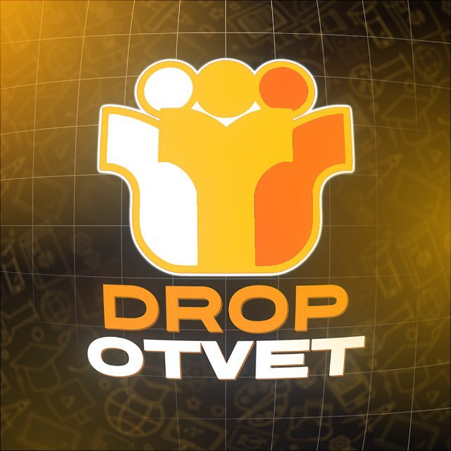

Таблица поиска
Запросы, места каналов, даты проверок и скриншоты.


DROP OTVET@dropotvet · официальный канал@DROPOTVET × KOMETA
Официальный канал заметнее в поиске Telegram
КОММЕРЧЕСКОЕ ПРЕДЛОЖЕНИЕ
Проверим, что люди видят по запросу DROP OTVET, и поможем им быстрее находить официальный канал.
В сезон официальный канал иногда опускается ниже других каналов. Человек ищет DROP OTVET и может перейти не туда.
Мы проверим поиск, приведём официальный канал и ссылки в порядок, а затем покажем результат в простом отчёте.
Шесть понятных шагов за 30 дней.
Введём DROP OTVET, @dropotvet и другие варианты названия. Сохраним место официального канала и сделаем скриншоты.
Составим список каналов из поиска. Отдельно отметим конкурентов, похожие названия и страницы, которые могут путать людей.
Подготовим понятное название, описание и закреплённое сообщение. Человек сразу увидит, что перед ним официальный DROP OTVET.
Соберём в одном месте правильные ссылки на канал, сайт, бота и мини-приложение. Укажем, какие ссылки нужно заменить.
Повторим поиск в течение 30 дней и сравним результаты. Вы увидите, что изменилось после правок.
Если чужой канал выдаёт себя за DROP OTVET, сохраним ссылки и скриншоты для жалобы. Решение об удалении принимает Telegram.
Все результаты останутся у вашей команды.
Запросы, места каналов, даты проверок и скриншоты.
Кто находится рядом с DROP OTVET и какие страницы могут путать людей.
Готовое название, описание и закреплённое сообщение.
Все официальные адреса DROP OTVET в одном документе.
Что нужно исправить и где это сделать.
Что было в начале, что мы изменили и что получилось.
Сравним одинаковые запросы до и после правок.
Запишем его место по каждому запросу и приложим скриншот.
Покажем, какие страницы находятся выше и ниже официального канала.
Отметим, что уже исправлено в канале и на связанных страницах.
Добавим эти данные, если сайт или бот сохраняет источник перехода.
Поиск Telegram может показывать разные результаты разным людям. Поэтому мы проверяем его несколько раз и сохраняем скриншоты.
Мы улучшаем официальный канал и проверяем результат. Порядок каналов в поиске определяет Telegram.
Готовые шаблоны для вашей команды.
+Реестр официальных ссылок DROP OTVET.
+Шаблон сообщения «как найти официальный канал».
+Список брендовых запросов для самостоятельной проверки.
+Чек-лист еженедельного контроля выдачи.
+Шаблон фиксации возможного нарушения.
+Шаблоны ссылок с метками, если бот умеет их сохранять.
ФИКСИРОВАННЫЙ SEO-ПРОЕКТ · 30 ДНЕЙ
Одна цена за весь проект: проверка поиска, готовые правки для официального канала, четыре повторные проверки и итоговый отчёт.
1Ссылки на канал, сайт, бота, мини-приложение и другие официальные страницы.
2Доступ для правок или сотрудник, который внесёт их со своей стороны.
3Список похожих каналов, о которых вы уже знаете.
4Главная цель: переход в канал, запуск бота, регистрация или оплата.
5Доступ к статистике и документы на бренд, если понадобится жалоба.
@DROPOTVET × KOMETA